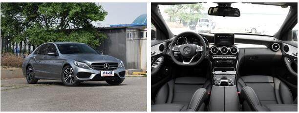
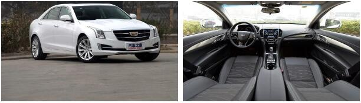
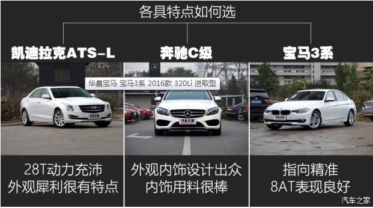

大家好，我是评测导购组编辑曹昊旻，最近我买了一辆宝马3系，成为很多同事眼中的“豪华车车主”，似乎姑娘都可以坐在我车里哭了。不过实际上，12月份临近年底，各品牌都在冲量，北京市场上豪华品牌的优惠都很大，所以实际成交车价比大多数朋友想象的要低很多。比如我这辆2016款宝马320Li进取型，优惠完裸车价格已经达到了25.08万元，全办下来也不到30万元，与大多数合资品牌中型车售价相近，性价比比较高。而我在接下来的半年时间里会为大家带来这款车型的详细解读。如果大家有任何关于选车购车方面的问题可以直接在我的编辑博客中留言，或者在微博中@我Russell-Hm，我会第一时间为您解答。
◆ 选车经历
我的上一辆车是2008款朗逸1.6L自动品悠版，购于2010年，如今已经行驶将近6万公里。平时在城市里代步这辆车倒也没什么问题，只是偏弱的动力和模糊的方向在加速超车并线时会显得比较捉急，再加上“小马拉大车”产生着较高的油耗（平均时速30km/h 油耗8.7L/100km）让我萌生了换车的念头。
● 为什么不选动力强/外观个性的凯迪拉克ATS-L？
先说说ATS-L吸引我的地方吧，显而易见就是它棱角分明的外观，与其它两款车型风格截然不同，较为夸张的设计很受我这样的年轻人喜欢。内饰运用大面积的钢琴烤漆饰板，看上去科技感很强。
● 为什么不选豪华感更强的奔驰C级？
在我看来奔驰C级的外观和内饰论好看和豪华程度它绝对是同级别最好的，用料也足够厚道，配置照顾的很周全。奔驰C级我看中的是C 200运动版，标准轴距的后排空间对于身高174cm的我来说够用了。低功率2.0T发动机完全可以保证日常驾驶所需动力，只是不如ATS-L高功率发动机那么有冲劲儿。可以说奔驰C级是在同级别中表现最为均衡的一款车型。但对于驾控感受有一定要求的我来说。C级的转向质感是我不太喜欢的，7速自动变速箱低挡位存在着顿挫的问题，影响驾驶质感。它的后排也存在着坐垫较短的问题，这几点最终使我放弃了C级。